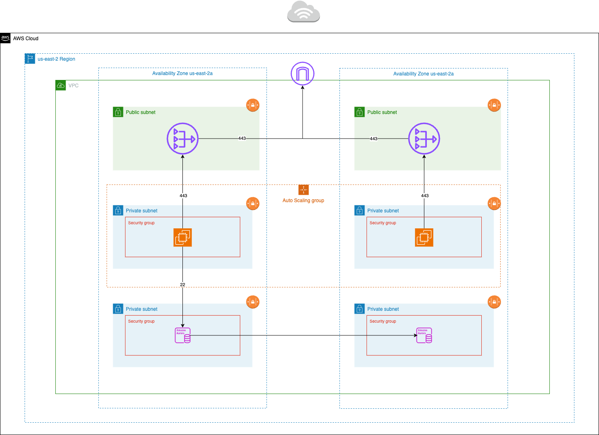

Multi-AZ Highly Available, and Fault Tolerant Architecture.
High availability, and fault tolerance are characterized by a few unique properties. A highly available cloud infrastructure incorporates elasticity in its resources to adjust to internet traffic. Fault Tolerane is characterized by redundancy in its infrastructure to prevent any downtime. A system can be highly available without being fault tolerant, and vice versa. The cloud architecture below incorporates both to ensure a given application experience zero downtime.
